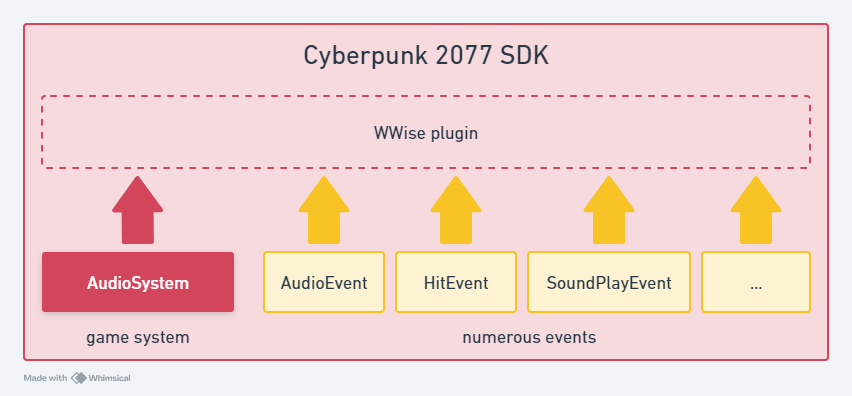
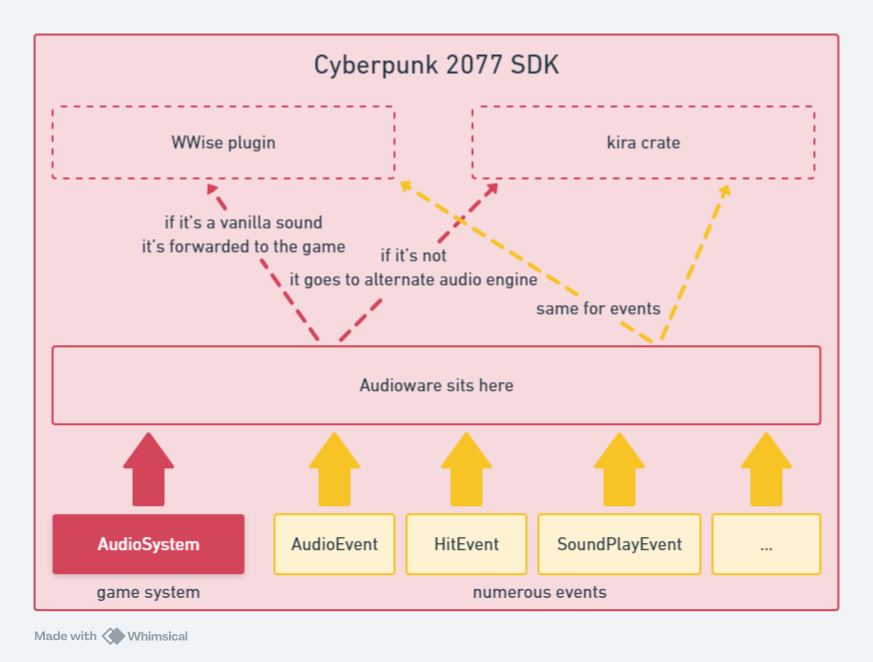

Concept
Out-of-the-box, Cyberpunk 2077's vanilla1 audio engine is built on top of Audiokinetic's WWise which is a professional-grade audio software and tools suite.
Audioware does not make any use of it and it has almost no control over it.
Here's how Cyberpunk 2077 is designed, in an overly simplified way.

When I initially started working on Audioware I also was tempted to hook everything from Audiokinetic to allow adding custom audio to the game. At first.
But the reality is that, when you choose this path on one side you get native2 integration which is great, but on the other you then need to do everything as both WWise and the game does. Not even mentioning that you actually will have to learn how CDPR works with WWise, which is not always standard.
Professional all-in-one softwares like Audiokinetic can be dauting to use when unfamiliar and quickly become an entry-skills barrier3 for newcomers who would simply like to add sounds, play around with them, have fun and come up with an interesting mod.
I really enjoyed REDmod in the beginning but always felt frustrated after a while to not be able to alter sounds dynamically.
The audio parameters it exposes are very cool, but as far as I remember you can't seamlessly switch from one to another, and if you want multiple parameters per sound you basically have to duplicate them as many times.
Last but not least, I regularly got players complaining about it becoming overly slow when (too?) many mods use it, and it does not seem particularly appreciated among player base.
What I always wanted right from start is a tool that can get me going in under 15min.
I wanted something to be able to play easily defined sounds with parameters and audio effects.
Something Simple. Easy. yet Customizable and Fast.
And this how Audioware was initially born as a simple proof-of-concept in 4ddicted, another mod of mine. Until other modders started to notice that it worked pretty well and asked me to turn into a fully integrated native plugin.
Audioware actually uses a second alternate audio engine named kira, alongside vanilla one.
It then does integrate seamlessly, creating the illusion that there's only one and unique audio environment.
Here is, once again in an overly simplified way, how it works:

But let's process to next chapter to see how it can be used, and what it can currently do for you.
vanilla describes everything belonging to the original game, as opposed to further modifications or mods made by the community.
natively in the sense that tool, assets and game itself speaks the exact same language leading to seamless integration.
reserved to a handful of professional.